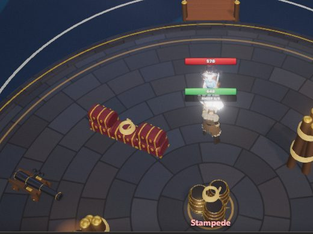
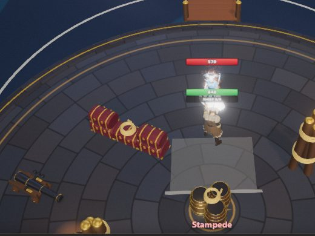

The hero framework · Heroes into folders
Hero bugs fixed
The hero audit found spells that did not do what their tooltips say. Each fix below is its own commit, so any one can be dropped. For every fix that changes play, the hero's win rate in the simulator before and after (192 fights; the shaded bar is the noise) and what happened to its two fight prints (the fixed duels against Isolde and against Brannoc). No numbers were retuned: where a hero moved, that is for you to judge.
1. Madame Cleaver's table healed the enemyfixed
The bug. Dinner Is Served says the table gives +25% damage for 5 s, and for her 50 HP. An enemy who ate at it got the damage and 50 HP too.
What changed. The enemy now gets only the damage; the 50 HP stay hers.
Win rate in the simulator (32 fights against each of the six benchmark foes)
Fight prints
Against Isolde: changed on purpose and taken again. The fights part at 22.0 s, where Isolde eats at the table and now gets no 50 HP (404 → 354). Against Brannoc: the same (he never eats there).
commit c0e5ec84
2. Gus's Flood bonusnothing to fix
The bug. The audit saw that Flood's Big Mop bonus does nothing: the mop deals 60 in Flood and out of it.
What changed. Nothing to restore. Today's tooltip promises no bonus: on 2026-11-04 a tuning pass raised the mop from 45 to 60 for everyone and took (60 while he surfs on Flood) out of the tooltip on purpose. The code matches the tooltip. Only the comments that still spoke of the bonus were corrected (fix 8). If you want a Flood bonus back (say 80 while he surfs), that is a new number for you to choose.
3. Late Fee, Foreclosure and Lightning Risk missed whoever walked infixed
The bug. Their tooltips say the notice lands after 1 s, the stamp falls in 0.8 s, the lightning strikes after 0.8 s. But they only hit someone who already stood near the spot when the player cast it: an enemy who walked into the circle during the warning was never hit. (The CPU's own casts always counted the hero, so this was the player's hero only.)
What changed. Each now hits every enemy in the circle at the moment it lands, like Call It In and the other delayed circles. Walking out still saves you; Foreclosure still needs Mr. Ledger to see you. The Rust copy of the rules changed the same way.
Win rate in the simulator (32 fights against each of the six benchmark foes)
Fight prints
All four the same: the hero's autopilot aims the circle at the enemy, who already stands in it at the cast in those duels, so the walk-in case never comes up there. The scripted check below is the proof.
The scripted check
The player's hero casts at an empty spot; the enemy is put in the circle during the warning, kept out, or stands in it from the cast.
| Spell | walks in during the warning | stays out | in it from the cast |
|---|---|---|---|
| Late Fee | before: missed after: hit | missed / missed | hit / hit |
| Foreclosure | before: missed after: hit | missed / missed | hit / hit |
| Lightning Risk | before: missed after: hit (77) | missed / missed | hit / hit |
commit 10d175be
4. Kit flags the computer player readsfixed
The bug. Seven spells carried flags that said something else than the spell does (the audit counted six; Chain Hammer and Shepherd's Crook are the same case). The CPU picks its spells by these flags.
What changed.
- World Tree (Fenna) and Sinkhole (Mabel) root: now crowd control, which the CPU casts first when ready and in reach (still under the ultimate's rules).
- Shadow Double (Nyx) leaves a fighting copy: now also a summon, which the CPU casts whenever the enemy is within about 10 m.
- Stampede (Bo) runs down a 12 m line that stops at cover: now aimed as a line (a strip instead of a ground circle; the cast needs no sight of the spot).
- Shepherd's Crook (Sefu) pulls and slows: no longer counted as crowd control.
Two held back, for you to decide (ready as two commits on top of the fixes, branch t3/hero-bugs-held-flags: b2610e89, 53d57ec0):
- Ember Flight as a dash silences it: the CPU's dash rule casts a dash only toward an enemy beyond Q's 10 m, but she flies to her embers, mostly to get away. In her print against Isolde she flew 5 times before and 0 times with the flag.
- Chain Hammer without crowd control breaks the CPU's Brannoc: he casts the hammer only because the flag puts it first (it has no cooldown). His win rate fell from 48.8% to 18.1%, his hammer from 12 casts to 3 in a print. He is also the foe of 40 prints and of every hero's simulator run.
Both need a CPU rule first (a dash its passive aims itself; a no-cooldown spell cast on its own merit), or stay as they are.
Win rate in the simulator (32 fights against each of the six benchmark foes)
Fight prints
Changed on purpose and taken again: Nyx's two (she casts Shadow Double at 1.5 s now, as a summon), Bo's two (from 17.5 s and 20.0 s: the line aim changes where his Stampede goes and how he throws it). The same: Fenna's, Mabel's and Sefu's (their ultimates or the crook never meet the changed rule in those duels).
Stampede's aim near cover (Bo, the barrels in front of him)


Mabel with only Sinkhole's flag (before the clock fix): 64.1%. Where a hero shows two runs on a side, the bar is their average: one run of 192 fights swings by about ±7 on its own.
commits ad1fc8d2, c593228d, 0eeeeb97, 0e525085, 77ff451f (4a-4e); held: b2610e89 (Ember Flight), 53d57ec0 (Chain Hammer)
5. Rules timed on the computer's clockfixed
The bug. Ten heroes timed their rules on the computer's clock, which runs on while the game does not (a hidden tab, a pause, a hitch): Crosswind's recast, Barbed Stinger's recast and barb, Oblivion's Collapse, Tempo's Stolen Hour and Slow Time, Big Yoko's ring, the wet floor and signs of Gus, Mabel's holes, Grandma Ironknit's yarn, Wick's doors, Pip's Final Delivery.
What changed. A fight's clock (fightNow()) that moves only when the game steps; these ten heroes' rules use it. Looks that only wobble with time keep the computer's clock.
Win rate in the simulator (32 fights against each of the six benchmark foes)
Fight prints
Gus against both foes, and Big Yoko, Mabel and Wick against Brannoc, moved by 1 to 17 cm from 18-30 s; the other twelve prints are the same. These are not rule changes: their objects live whole seconds (wet floor 6 s, holes, the ring, doors), so they end exactly on a frame, and whether that last frame still counts depends on how a clock's sixtieths add up. Proof: with the fight clock started at 123,456.789 ms instead of 0, all four play exactly their old fights again; started at 777 ms, they move again; Pip, the control, never moves. Taken again as they now are.
Zephyr and Tempo are shown under fix 7 and Mabel under fix 4 (their runs carry both fixes). Pip's Final Delivery is never cast in his prints; the tool page's self test of it is identical before and after.
commits f69199c4 (the clock) and 14bff6b6 to 56339d57, one per hero
6. Online: a late Uproot and a quick second Tag Out were droppedfixed
The bug. The server let an R through again only after 10 s, with one free recast within 4 s. Fenna's Uproot may come up to 9.2 s after World Tree, and Pim and Pom's Tag Out comes back after 8 s: the other player never saw them.
What changed. Each hero's R timing is a row in the server's table: Fenna's recast is let through within 9.7 s, Pim and Pom's R every 7.5 s; the default recast window is 4.5 s (Hank's Timber was on the old 4 s edge). Two new server checks (they failed before the fix, they pass now); in development the game warns if a card's R does not fit the table.
Fight prints
No change possible: the prints and the simulator play offline. 80 of 80 the same.
commit 2481b38a
7. The CPU threw spells at heroes nothing can touchfixed
The bug. The CPU had a rule to hold its spells while the enemy sat in Isolde's ice block or Oblivion's maw. Both were taken out of their kits in earlier reworks, so the rule never fired; meanwhile four heroes have such a window today.
What changed. The rule now asks the enemy hero itself whether anything can land: Tempo in Time Skip, Anka in her ashes, Zephyr in the wind (Skyward, Sky Rend's cuts), Marin in her mist. The CPU holds every spell meanwhile. These four were not named in the request: say if you would rather not have it for some of them.
Win rate in the simulator (32 fights against each of the six benchmark foes)
Fight prints
Changed on purpose and taken again: Zephyr's two (at 3.0 s Isolde holds her Icicle while he is in the wind; against Brannoc from 12.5 s), Marin's against Brannoc (from 3.5 s), Anka's against Brannoc (from 21.5 s, round her ashes). The same: Marin's and Anka's against Isolde, both of Tempo's (the prints never cast Time Skip).
commit 4e2753c5
8. About 80 comments with old numbersfixed
The bug. Spell comments gave numbers from before the tuning passes (Sky Strike 50 where the code says 60, The Shove 60 for 70, Invoice 50 for 72 ...).
What changed. 93 files' comments now give the code's numbers. Only comments: each file's code, with the comments stripped, is the same as before.
Fight prints
80 of 80 the same (with fixes 6 and 9).
commit 0de24934
9. Loose ends from the move into foldersfixed
The bug. The shared effects kit reached into Vesper's folder for the blood parts; the tool that writes new heroes' design sheets wrote the old paths; the Rust copy's comments named the old files.
What changed. The blood kit is back with the shared parts (Vesper's folder points to it); the sheet tool and its 20 sheets use the hero folders; the Rust comments name them, and its design page lists Barry Cloudsley as the seventh ported hero.
Fight prints
80 of 80 the same (with fixes 6 and 8).
commit 029ef402
The checks
- Fight prints 80 of 80 the same on the final code; the changed ones taken again on purpose, each traced to its fix at that fix's own commit
- Fixes 6, 8, 9 change no fight: 80 of 80 the same before the other fixes
- Simulator every changed hero inside ±7 on the merged code; Mabel, Wick and Grandma Ironknit, whose single runs landed just past 7, were run twice on each side and are inside on the averages
- Server 367 checks pass on the final code, the new relay checks among them (they failed before fix 6)
- Type check, build, Rust tests pass (36 Rust tests)
- Rust guard lists 38 lines (19 before): most are files whose comments fix 8 corrected; the real ones are Mr. Ledger's and Barry's circles (the Rust port changed the same way: they need a re-grade), Sirix's clock (the Rust port has its own fight clock already); Brannoc's port is older than his rework anyway
Left for later
- About 15 more heroes still time some rule on the computer's clock (Madame Cleaver's dishes, Mum, Silvane, Brannoc's Quench, Isolde's icicle, Kaia's rod and others): the same move, a hero at a time.
- Three tooltips say more than the code: Nyx's Smoke Veil ("even mid-fight": the code waits 1.5 s), Kaia's Supercell ("for 6 s": its checks stop at 4.8 s), Mum's Boxed In (sight is checked only at the cast).
- The other online gaps of the audit (a hit the server refuses after 12 s, a repeat cast restarting the first, Gerald's break) and the Rust re-grades.